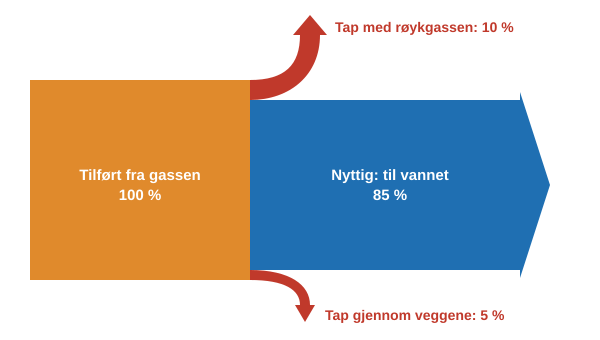

Varmetap og virkningsgrad
Ikke all energien vi tilfører, kommer fram dit vi vil. Noe går tapt som varme til omgivelsene. Virkningsgraden forteller hvor stor del av energien som blir nyttig. Den er et mål på hvor godt et anlegg utnytter energien.
Denne siden bygger på Varme og energi i prosesser (\( Q = m \cdot c \cdot \Delta T \)) og Energi, arbeid og effekt (\( E = P \cdot t \)).
Virkningsgrad
Virkningsgraden er den nyttige energien delt på den tilførte energien. Den skrives med den greske bokstaven \( \eta \) («eta»):
\[ \eta = \frac{E_\text{nyttig}}{E_\text{tilført}} \]
Begge energiene må ha samme enhet, for eksempel kJ. Svaret er et tall mellom 0 og 1, og vi gjør det om til prosent ved å gange med 100. Formelen virker også med effekt i kW, for eksempel nyttig effekt delt på tilført effekt.
Energi kan ikke lages av ingenting. Den nyttige energien kan derfor aldri bli større enn den tilførte, og virkningsgraden er alltid under 100 %. Resten er tap:
\[ E_\text{tap} = E_\text{tilført} - E_\text{nyttig} \]
Hvor blir energien av?
Energien som går tapt, forsvinner ikke. Den går ut til omgivelsene, nesten alltid som varme. Figuren viser hvor energien i en gasskjel blir av.

Typiske tap i et prosessanlegg:
- Varme rør, tanker og utstyr gir fra seg varme til lufta rundt.
- Røykgass fra brennere og kjeler går varm ut av pipa.
- Damplekkasjer og dampfeller som ikke stenger, slipper ut damp med mye energi.
- Varmt kjølevann og varme produkter slippes ut uten at varmen brukes til noe.
På siden Varme og energi i prosesser regnet vi ut at 500 kg vann trenger 136 MJ for å varmes fra 15 °C til 80 °C. Med et varmeelement på 30 kW skulle det ta ca. 75 minutter.
Oppgave: I virkeligheten tar det 90 minutter. Hvor stor er virkningsgraden, og hvor mye energi går tapt?
- Tid i sekunder: \( t = 90 \text{ min} \cdot 60 \text{ s/min} = 5400 \text{ s} \)
- Tilført energi: \( E_\text{tilført} = P \cdot t = 30 \text{ kJ/s} \cdot 5400 \text{ s} = 162\,000 \text{ kJ} = 162 \text{ MJ} \)
- Nyttig energi (fra før): \( E_\text{nyttig} = 136 \text{ MJ} \)
- Virkningsgrad: \( \eta = \dfrac{136 \text{ MJ}}{162 \text{ MJ}} = 0{,}84 = 84 \,\% \)
- Tap: \( 162 \text{ MJ} - 136 \text{ MJ} = 26 \text{ MJ} \)
Svar: Virkningsgraden er ca. 84 %, og ca. 26 MJ går tapt, mest gjennom tankveggen og lokket.
Isolasjon
Varme går alltid fra varmt til kaldt. Et varmt rør gir derfor fra seg varme til lufta rundt så lenge det er varmere enn lufta. Tapet blir større når
- temperaturforskjellen mellom røret og lufta er stor. Et damprør på 150 °C taper mye mer enn et varmtvannsrør på 40 °C.
- flaten er stor. Lange rør og store tanker har mye flate som kan gi fra seg varme.
- isolasjonen er tynn, mangler eller er skadet.
Isolasjon er et materiale som leder varme dårlig, for eksempel mineralull eller skumplast. Det meste av isolasjonen er luft som står stille i små lommer. Isolasjon rundt rør og tanker holder varmen inne, sparer energi og hindrer at noen brenner seg. Isolasjon som er blitt våt, isolerer mye dårligere, fordi vann leder varme mye bedre enn luft. Våt isolasjon kan også gi rust under isolasjonen. Ødelagt eller våt isolasjon er derfor noe operatøren skal melde fra om.
Isolasjon brukes også på kalde rør, for eksempel kjølevannsrør. Der holder den varmen ute og hindrer at det dannes kondens og is på røret.
Forsøk: Virkningsgraden til en vannkoker
Du sammenligner energien vannkokeren bruker, med energien vannet tar opp.
- Les av effekten på typeskiltet under vannkokeren, for eksempel 2000 W.
- Vei opp ca. 1 kg kaldt vann, og hell det i vannkokeren. Noter massen.
- Mål starttemperaturen til vannet.
- Slå på vannkokeren og start stoppeklokka samtidig. Stopp klokka når vannkokeren slår seg av. Da koker vannet, og temperaturen er ca. 100 °C.
- Regn ut nyttig energi (\( Q = m \cdot c \cdot \Delta T \)), tilført energi (\( E = P \cdot t \)) og virkningsgraden.
| Måling og beregning | Verdi |
|---|---|
| Effekt fra typeskiltet, \( P \) (W) | |
| Masse vann, \( m \) (kg) | |
| Starttemperatur (°C) | |
| Sluttemperatur (°C) | ca. 100 |
| Tid, \( t \) (s) | |
| Nyttig energi, \( Q \) (kJ) | |
| Tilført energi, \( E \) (kJ) | |
| Virkningsgrad, \( \eta \) (%) |
Målinger: Vannkokeren har 2000 W på typeskiltet. 1,00 kg vann på 15 °C koker etter 200 s.
- Nyttig energi: \( Q = 1{,}00 \text{ kg} \cdot 4{,}18 \text{ kJ/(kg·°C)} \cdot (100 - 15) \text{ °C} = 355 \text{ kJ} \)
- Tilført energi: \( E = 2000 \text{ W} \cdot 200 \text{ s} = 400\,000 \text{ J} = 400 \text{ kJ} \). (1 W = 1 J/s.)
- Virkningsgrad: \( \eta = \dfrac{355 \text{ kJ}}{400 \text{ kJ}} = 0{,}89 = 89 \,\% \)
Svar: Virkningsgraden er ca. 89 %. Ca. 45 kJ gikk med til å varme opp selve vannkokeren og til tap til lufta.
Spørsmål til rapporten:
- Hvor ble energien som ikke gikk til vannet, av?
- Effekten på typeskiltet er en omtrentlig verdi. Den virkelige effekten kan være litt høyere eller lavere, blant annet fordi spenningen i stikkontakten varierer. Hvordan påvirker det svaret ditt?
- Tror du virkningsgraden blir høyere eller lavere hvis du bare koker en liten skvett vann? Begrunn svaret.
- Hvordan kunne vannkokeren vært bygd for å få høyere virkningsgrad?
Kokende vann og damp fra tuten gir brannskader. Hold hendene unna tuten, og ikke flytt vannkokeren mens vannet koker. Mål temperaturen før du slår på, ikke mens vannet koker. I anlegget kan uisolerte damprør og varme tanker være over 100 °C. Ta aldri på et rør eller utstyr du ikke vet temperaturen på, og meld fra om skadet isolasjon.
Test deg selv
1. Hva er virkningsgrad?
- tilført energi delt på nyttig energi
- nyttig energi delt på tilført energi
- tapet delt på tiden
η = nyttig energi / tilført energi. Den forteller hvor stor del av energien som kommer fram dit vi vil.
2. En gasskjel får 10 kW fra gassen, og 8 kW går til vannet. Hva er virkningsgraden?
- 2 %
- 80 %
- 125 %
η = 8 kW / 10 kW = 0,80 = 80 %. De siste 2 kW er tap.
3. Hvorfor kan virkningsgraden aldri bli over 100 %?
- Fordi måleinstrumentene ikke går høyere.
- Fordi energi ikke kan lages av ingenting.
- Fordi varme alltid går fra kaldt til varmt.
Den nyttige energien kan ikke bli større enn den tilførte. Da måtte energi blitt laget av ingenting.
4. Hvilket rør taper mest varme per meter?
- et uisolert damprør på 150 °C
- et godt isolert damprør på 150 °C
- et uisolert vannrør på 25 °C
Tapet er størst når temperaturforskjellen til lufta er stor og isolasjonen mangler.
5. En vannkoker på 1500 W står på i 4,0 minutter. Hvor mye energi får den tilført?
- 6,0 kJ
- 360 kJ
- 6000 kJ
t = 4,0 · 60 s = 240 s. E = 1500 W · 240 s = 360 000 J = 360 kJ.
Ordliste
| Begrep | Forklaring | Engelsk |
|---|---|---|
| virkningsgrad | Hvor stor del av den tilførte energien som blir nyttig. Den er nyttig energi delt på tilført energi, og oppgis ofte i prosent. | efficiency |
| varmetap | Varme som går ut til omgivelsene i stedet for dit vi vil ha den. | heat loss |
| isolasjon | Materiale som leder varme dårlig. Det legges rundt rør og tanker for å holde varmen inne eller ute. | insulation |
| røykgass | Den varme gassen som går ut av pipa fra en brenner eller kjel. Den tar med seg energi ut av anlegget. | flue gas |
Les mer
- Varme og energi i prosesser og Energi, arbeid og effekt i dette temaet.
- Energibalanse i en varmeveksler, der tapet finnes ved å sammenligne de to sidene.
Om kildene: Teksten, eksemplene og figuren på denne siden er laget for dette nettstedet, og tallene er tenkte og avrundede. Siden bygger på undervisningsopplegg i kjemiprosess- og laboratoriefag ved Sauda vgs, som er utarbeidet med utgangspunkt i blant annet Kjemien stemmer, Laboranten og åpne nettkilder.